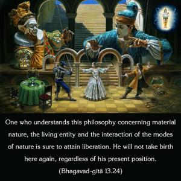
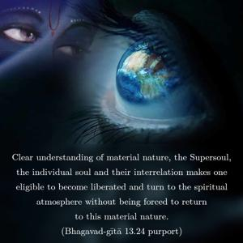
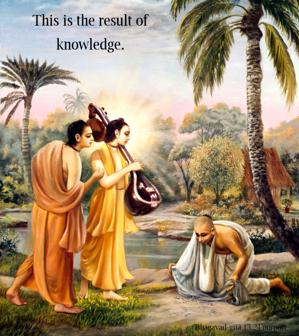
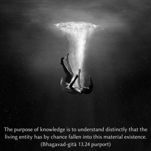

One who understands this philosophy concerning material nature, the living entity and the interaction of the modes of nature is sure to attain liberation. He will not take birth here again, regardless of his present position.




Clear understanding of material nature, the Supersoul, the individual soul and their interrelation makes one eligible to become liberated and turn to the spiritual atmosphere without being forced to return to this material nature. This is the result of knowledge. The purpose of knowledge is to understand distinctly that the living entity has by chance fallen into this material existence. By his personal endeavor in association with authorities, saintly persons and a spiritual master, he has to understand his position and then revert to spiritual consciousness or Kṛṣṇa consciousness by understanding Bhagavad-gītā as it is explained by the Personality of Godhead. Then it is certain that he will never come again into this material existence; he will be transferred into the spiritual world for a blissful eternal life of knowledge.